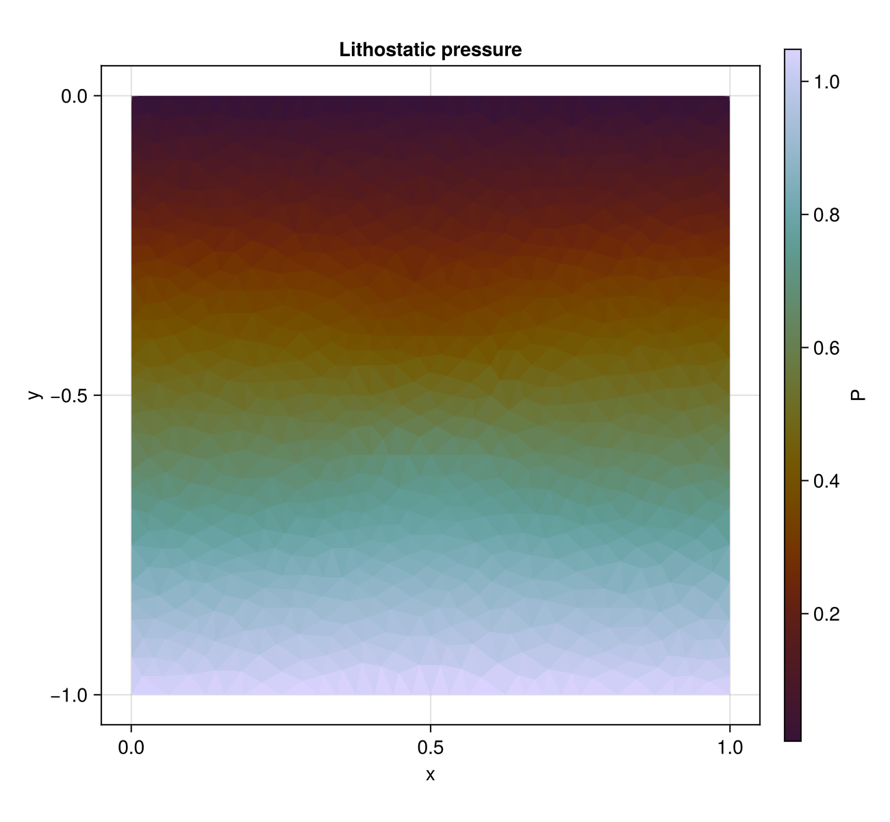
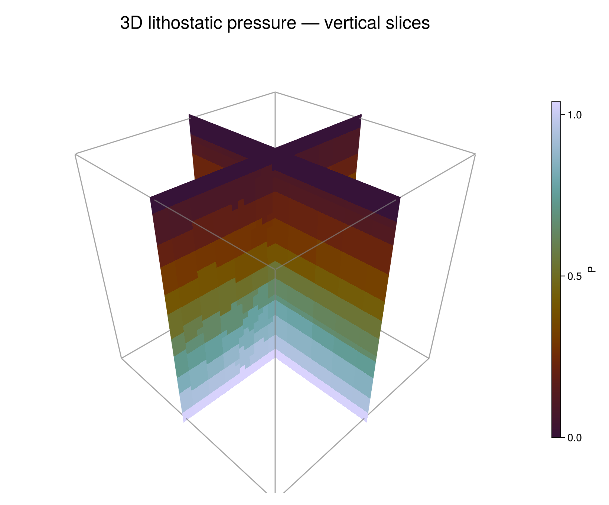

Lithostatic Pressure
FEMTools.jl computes the pressure required to balance gravity in a stationary material. The solver supports multiple compressible or incompressible phases, temperature-dependent density, unstructured finite-element meshes, and CPU or GPU execution through KernelAbstractions.jl.
Two complete examples accompany this page:
examples/lithosttic_pressure/lithostatic_pressure2D.jluses an unstructured triangular mesh derived from the sinking-block example.examples/lithosttic_pressure/lithostatic_pressure3D.jluses Gmsh.jl to create an unstructured quadrilateral base and extrudes it into linear Hex8 elements.
Governing equations
Static force balance without deviatoric stress is
\[-\nabla P + \rho\mathbf{g} = \mathbf{0},\]
where $P$ is pressure, $\rho$ is density, and $\mathbf{g}$ is the gravitational-acceleration vector. FEMTools solves its weak form
\[\int_\Omega \nabla P\cdot\nabla v\,\mathrm{d}\Omega = \int_\Omega \rho(P,T)\,\mathbf{g}\cdot\nabla v\,\mathrm{d}\Omega \qquad \forall v,\]
or, equivalently,
\[\int_\Omega \nabla v\cdot \left(\rho\mathbf{g}-\nabla P\right)\,\mathrm{d}\Omega=0.\]
For phase $p$, density follows the linearised equation of state
\[\rho_p(P,T)=\rho_{0,p} \left[1-\alpha_p(T-T_\mathrm{ref})+\frac{P}{K_p}\right],\]
with reference density $\rho_{0,p}$, thermal expansivity $\alpha_p$, bulk modulus $K_p$, and reference temperature $T_\mathrm{ref}$. Setting $K_p=\infty$ removes pressure-dependent compressibility. Both examples are isothermal and incompressible, so $\rho_p=\rho_{0,p}$.
At an integration point $q$, the discrete element residual is
\[\mathbf{R}_e = \sum_q w_q |J_q|\, \mathbf{B}_q^\mathsf{T} \left(\rho_q\mathbf{g}-\mathbf{B}_q\mathbf{P}_e\right),\]
where $\mathbf{B}_q$ contains physical shape-function gradients and $\mathbf{P}_e$ contains the element nodal pressures.
Boundary conditions
The examples use a traction-free surface at $y=0$:
\[P=0 \qquad \text{on } \Gamma_\mathrm{top}.\]
All other boundaries receive the natural zero-flux condition implied by the weak form,
\[\left(\nabla P-\rho\mathbf{g}\right)\cdot\mathbf{n}=0 \qquad \text{on } \partial\Omega\setminus\Gamma_\mathrm{top}.\]
With $\mathbf{g}=(0,-g,0)$ and constant density, the one-dimensional reference solution is therefore
\[P(y)=\rho g(-y), \qquad -L_y\le y\le0.\]
The examples use this profile as the initial guess. A denser block with $\rho_2=2\rho_1$ perturbs the pressure locally.
Dynamic-relaxation solver
LithostaticPressureDR converges the steady equation through pseudo-time. For iteration $k$, the preconditioned rate and pressure updates are
\[\dot{\mathbf{P}}^{k+1} =\mathbf{M}^{-1}\mathbf{R}^k+\beta\dot{\mathbf{P}}^k, \qquad \mathbf{P}^{k+1}=\mathbf{P}^k+\alpha_\mathrm{DR}\dot{\mathbf{P}}^{k+1},\]
where $\mathbf{M}$ is a diagonal preconditioner assembled from the element Jacobian. Spectral estimates $\lambda_\min$ and $\lambda_\max$ determine the Chebyshev parameters
\[\Delta\tau=\frac{2\,\mathrm{CFL}}{\sqrt{\lambda_\max}}, \quad c=2c_\mathrm{fact}\sqrt{\lambda_\min}, \quad \alpha_\mathrm{DR}=\frac{2\Delta\tau^2}{2+c\Delta\tau}, \quad \beta=\frac{2-c\Delta\tau}{2+c\Delta\tau}.\]
Iteration stops when
\[\frac{\lVert\mathbf{R}^k\rVert_2} {\max(\lVert\mathbf{R}^0\rVert_2,\epsilon_\mathrm{mach})}<\epsilon.\]
Two-dimensional example
The 2-D domain is $[0,1]\times[-1,0]$. It contains a square dense block centred at $(0.5,-0.5)$ with half-width 0.1. Triangulate.jl first creates the constrained sinking-block mesh; the example then extracts its three-node corner connectivity and solves on linear T3 pressure elements. The material parameters are
\[\rho_1=1,\qquad \rho_2=2,\qquad \mathbf{g}=(0,-1),\qquad \alpha_1=\alpha_2=0, \qquad K_1=K_2=\infty.\]
element = ReferenceElement(LinearElement{2, 3, Float64})
mesh = Mesh(backend, coords, el2n, element; workgroup)
dr = LithostaticPressureDR(backend, mesh.nnodes, material;
CFL=0.9, c_fact=0.9, ϵ=1e-6)
bc = DirichletBoundaryCondition(nothing, top_nodes, zeros(length(top_nodes)))
solver!(dr, mesh, bc; workgroup, ncheck=25, Tref=0.0, g=(0.0, -1.0))
Pressure is zero at the upper surface and increases with depth. The denser inclusion produces the small lateral departure from the homogeneous linear profile around the centre of the domain.
Run the example from the repository root with
julia --project=examples examples/lithosttic_pressure/lithostatic_pressure2D.jlThree-dimensional example
The 3-D domain is $[0,1]\times[-1,0]\times[0,1]$. Gmsh creates an unstructured recombined quadrilateral mesh in the $x$-$y$ plane, then extrudes it through eight layers in $z$. The resulting mesh contains only Gmsh type-5 linear hexahedra; the example rejects mixed volume-element output. The dense block is centred at $(0.5,-0.5,0.5)$ with half-width 0.15.
element = ReferenceElement(LinearElement{3, 8, Float64})
mesh = Mesh(backend, coords, el2n, element; workgroup)
g = SA[0.0, -1.0, 0.0]
dr = LithostaticPressureDR(backend, mesh.nnodes, material;
CFL=0.9, c_fact=0.9, ϵ=1e-6)
solver!(dr, mesh, bc; workgroup, ncheck=25, Tref=0.0, g=g)
The two vertical slices intersect at the centre of the dense block. For visualisation, the unstructured Hex8 nodal solution is resampled onto a regular grid; the pressure solve itself remains on the original Gmsh mesh.
The default mesh has 1,260 nodes and 952 Hex8 elements. The script writes lithostatic_pressure3D.vtk, containing nodal pressure and phase fields, for inspection in ParaView:
julia --project=examples examples/lithosttic_pressure/lithostatic_pressure3D.jlSolver API
An element-aware Mesh stores the reference element and precomputed geometry. Set dr.T before solving when thermal density variations are active.
material = ThermalMaterial(; k, Cp, ρ0, α, K)
dr = LithostaticPressureDR(backend, mesh.nnodes, material)
copyto!(dr.T, temperature)
solver!(dr, mesh, bc; Tref=273.0, g=(0.0, -9.81))
P = Array(pressure(dr))FEMTools.LithostaticPressureDR — Type
LithostaticPressureDR{nphases, _T, _TI, FP}Solver state for the lithostatic-pressure problem solved with a pseudo-transient dynamic-relaxation (DR) scheme.
The weak form is ∫ ∇P·∇v dΩ = ∫ ρ(T) g·∇v dΩ (steady-state Poisson), so no time-step arrays are needed. Temperature T enters only as a known coefficient for the density EOS ρ = ρ0(1 − α(T−Tref) + P/K). Tref and g are passed to solver!, so callers can choose the reference temperature and body-force vector without rebuilding the solver state.
Type parameters
nphases— number of material phases (compile-time constant)_T— nodal float array type (e.g.Vector{Float64}on CPU,CuArrayon GPU)_TI— nodal integer array type (same backend as_T, element typeInt)FP— floating-point precision (Float32orFloat64)
Nodal arrays (length nnodes)
| Field | Description |
|---|---|
R | Current residual |
R0 | Residual snapshot used for λ_min estimate |
∂R∂P | Row-sum Jacobian estimate |
PC | Diagonal preconditioner |
P | Pressure (current iterate, the unknown) |
∂P∂τ | Pseudo-transient rate |
T | Temperature (input from thermal solver) |
phases | Per-node phase index (1-based integer) |
Material properties
ρ0, α, and K are taken from ThermalMaterial. This allows the same material definition to be shared with ThermalDiffusionDR.
Solver parameters
CFL, c_fact, ϵ (convergence tolerance).
Constructor
LithostaticPressureDR(backend, nnodes, material::ThermalMaterial; CFL=0.98, c_fact=0.9, ϵ=1e-6)
LithostaticPressureDR(nnodes, material::ThermalMaterial; kwargs...) # CPUThe tuple-based constructors remain available for compatibility.
All nodal float arrays are zero-initialised; phases is initialised to 1. T should be filled via copyto!(dr.T, ...) before calling solver!.
FEMTools.solver! — Method
solver!(dr, mesh, bc; workgroup=256, kwargs...)Solve for lithostatic pressure using the element and geometry stored in mesh and the prescribed values in bc. The backend is inferred from mesh.coords; remaining keywords are forwarded to the low-level solver.
FEMTools.assemble_lithostatic_pressure_matrices_atomix! — Function
assemble_lithostatic_pressure_matrices_atomix!(...; compute_jacobian=false)Assemble the lithostatic-pressure residual and optional Jacobian diagnostics with atomic scatter. Set compute_jacobian=true to also fill the absolute Jacobian row sums ∂R∂P and absolute diagonal PC.
FEMTools.assemble_lithostatic_pressure_matrices_colored! — Function
assemble_lithostatic_pressure_matrices_colored!(...; compute_jacobian=false)Assemble the lithostatic-pressure residual and optional Jacobian diagnostics by sequentially launching conflict-free groups from generate_element_groups. Set compute_jacobian=true to also fill the absolute Jacobian row sums ∂R∂P and absolute diagonal PC.
FEMTools.lp_element_residual — Function
lp_element_residual(...)Gather element-local values and return the integrated lithostatic-pressure residual with its global node indices.
FEMTools.lp_element_jacobian — Function
lp_element_jacobian(...)Return element node indices, absolute Jacobian row sums, and absolute diagonal.
FEMTools.lp_integrate_residual — Function
lp_integrate_residual(...)Integrate one element of ∫ (ρ(T, P) ∇Nᵢ⋅g - ∇Nᵢ⋅∇P) dΩ, where ρ = ρ0 (1 - α(T - Tref) + P/K).